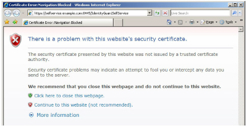
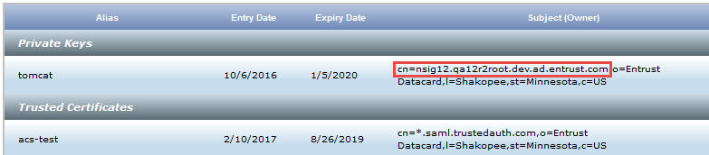
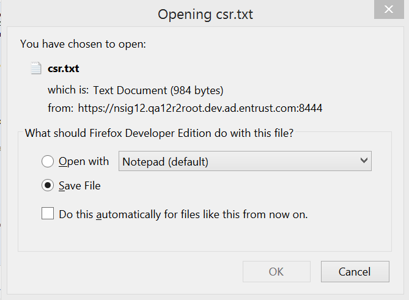
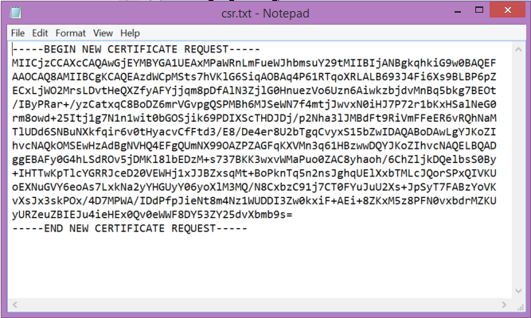
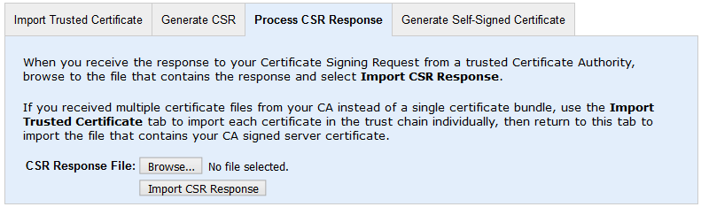

|
IdentityGuard Server 12.0 Administration Guide |
|
IdentityGuard Server 12.0 Administration Guide |
This topic describes the steps in what is known as the certificate signing request (CSR) process, the process used to obtain and install a trusted certificate from a Certification Authority (CA).The same process is also used to update a CA-signed certificate that is nearing expiry.
When Entrust IdentityGuard is first installed, it creates a self-signed certificate that can be used for a proof-of-concept or demonstration installations, or until you get a certificate from a trusted Certificate Authority (CA) such as Entrust Certificate Services.
The self-signed certificate enables a SSL connection between the Entrust IdentityGuard Server and its clients, such as users' browsers and the Self-Service Module. Browsers do not implicitly trust self-signed certificates, and they display warnings (such as the one shown in the following screen capture) when users access the Entrust IdentityGuard web interfaces.

For production deployments, you should replace the self-signed certificate with a secure one that is signed by a CA such as Entrust. Entrust is a public CA that is trusted by all major browser vendors and mobile phone vendors.
To switch to a CA-signed certificate
1. Log in to the Administration interface.
2. From the top menu, select System, then click the Key Store Management tab.
3. Complete the following steps to generate a certificate signing request (CSR) to send to the CA.
a. Click the Generate CSR tab
b. Enter the required information in the following information fields.
Common name (FQDN, CN) — This field displays the fully qualified domain name (FQDN) of your Entrust IdentityGuard Server, as shown in your current, self-signed tomcat certificate.
Note: Entrust Certificate Services also offer the option to get a wild card certificate, (something like *.mycompany.com). Such a CA certificate can be used on any server that is located in your domain.

Organization (O) — Enter the name of your organization.
Organizational Unit (OU) — Enter the name of your organizational unit.
Locality (L) — Enter the city or other locality where the organization associated with this Entrust IdentityGuard server deployment is located.
State / Province (ST) — Enter the state, province, or territory..
Country (C) — Enter the 2-character code for the country.
c. Click Generate CSR. The CSR is generated. A popup window appears.

d. Select Open with, and click OK. The CSR file opens in Notepad.

Leave the Notepad file open. Its contents are used in the next procedure.
4. Obtain a CA-signed certificate from a Certification Authority (CA). The steps that follow describe how to obtain a CA-signed certificate from Entrust Certificate Services. If you are using a different CA, follow the steps they provide.
a. Go to Entrust Certificate Services https://www.entrust.com/ssl-certificates/ and select the type of certificate you want to purchase.
b. Follow the on-screen instructions to purchase the certificate, following these guidelines:
● When prompted for a CSR, copy-and-paste the contents of the CSR file you created in step 3 into the field provided, and then click Next. You must include the ---Begin Certificate Request--- and ---End Certificate Request--- lines.
If your CSR is valid, a confirmation page appears showing the fully qualified domain name that you specified when creating the CSR (for example, ig.example.com). If it is not correct, re-create the CSR with the correct information.
● When prompted for contact information:
– Specify different individuals as your Authorization, Technical, and Billing contacts. If you do not specify separate people, Entrust will contact you and ask you for this information.
– List yourself as the Authorization or Technical contact. Entrust sends the SSL certificate to these contacts. (The certificate is not sent to the Billing contact.)
● Proceed through the remaining pages, providing information as necessary, until you reach the end. Record your order number to track your order.
Entrust Certificate Services processes the order and sends you an email with a link to a Web page where you can pick up your certificate. The process takes three to five business days.
c. Save the file or files to a location of your choice.
Note: If your CA offers you a choice of downloading individual certificates or a certificate chain bundle, select the bundle.
5. Use the Key Store Management interface to process the CSR Response. Complete the following steps:
a. Log in to the Administration interface.
b. From the top menu, select System, then click the Key Store Management. tab.
c. Click the Process CSR Response tab.

d. On the Certificate Upload page, click Browse to navigate to the location of the file you received from the CA. It is either a complete certificate bundle with your signed server certificate plus the signing Root CA certificate and any required intermediate CA certificates, or it must be your signed server certificate after you have used the Import Trusted Certificate tab to individually upload the Root CA certificate and any required intermediate certificates.
Note: If your CA offers you a choice of downloading individual certificates or a certificate chain bundle, select the bundle.
e. Click Import CSR Response.
6. Restart the Entrust IdentityGuard server service.
The new tomcat alias, now with a CA-signed certificate, appears in the key store.
The CA-signed certificate allows web browsers to implicitly trust your web site.